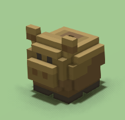
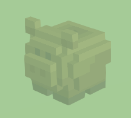
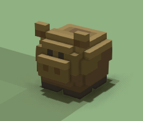

Let's take a look at the entity forms component. We'll be using the Piggy Bank from the startermod_basic mod for this explanation (refer to this for how to get it).
Entity Forms
Entity Forms is a component used by all the items in the game that can be placed in the world, picked up again, and moved. You should be aware of it when creating new items for your mod.
Some items don't really need it, so they don't have this specific component (for example, non-movable items such as trees/boulders created at world generation, wood or other resources that are not placeable, baskets of food, hearthlings, etc.).
Every placeable item must have 3 forms, represented by different JSON files:
Root
This represents the placed item. Its JSON file contains the entity_forms component, therefore references the two other forms's files. 
This is the piggy_bank.json file that represents the Piggy Bank entity:
{
"type": "entity",
"mixins" : "file(piggy_bank_ghost.json)",
"components" : {
"stonehearth:entity_forms" : {
"iconic_form" : "file(piggy_bank_iconic.json)",
"ghost_form" : "file(piggy_bank_ghost.json)",
"placeable_on_ground" : true
},
"region_collision_shape" : {
"region": [
{
"min" : { "x" : 0, "y" : 0, "z" : 0 },
"max" : { "x" : 1, "y" : 0.4, "z" : 1 }
}
]
}
},
"entity_data" : {
"stonehearth:net_worth" : {
"value_in_gold" : 10,
"rarity" : "common",
"shop_info" : {
"buyable" : false,
"sellable" : true,
"shopkeeper_level" : 1,
"shopkeeper_type" : "caravan"
}
}
}
}
As you can see, this file also references the ghost form file as a mixin. That is because both the ghost and the final placed item share some properties, such as the QB model, name and description, and storage category. This way we don't have to repeat those properties in the piggy_bank.json file.
The entity_forms component will read the files for the ghost and iconic forms that we declare here, so the game will know how to represent this entity when it is in a stockpile, when we order to place it, and when it is already placed.
Ghost
This represents the semi-transparent form that the item has when we order to place it in the world but it hasn't been placed yet. 
This is the piggy_bank_ghost.json file:
{
"mixins": "stonehearth:mixins:placed_object",
"components": {
"model_variants": {
"default": {
"models": [
"file(wooden_piggy_bank.qb)"
]
}
},
"mob": {
"model_origin": {
"x": -0.05,
"y": 0,
"z": 0.05
},
"region_origin": {
"x": 0.5,
"y": 0,
"z": 0.5
}
}
},
"entity_data": {
"stonehearth:catalog": {
"description": "i18n(startermod_basic:entities.piggy_bank.piggy_bank_ghost.description)",
"icon": "file(piggy_bank.png)",
"display_name": "i18n(startermod_basic:entities.piggy_bank.piggy_bank_ghost.display_name)",
"material_tags": "toy decoration crafted stockpile_decoration"
}
}
}
Notice that it doesn't have a "type" field, it's not really an entity, it's just a blob of data reused by other entities and components. It only has some mixins, components and entity_data that we need to represent the "ghost" form of the item. We also reuse it as a mixin in the piggy_bank.json file, so all of these properties are pulled into that file too.
Iconic
This represents the small / simplified form of the item, which we get when we craft / obtain that item and when hearthlings carry it or move it to a stockpile. 
This is the piggy_bank_iconic.json file:
{
"mixins": "stonehearth:mixins:item_properties",
"type": "entity",
"components": {
"model_variants": {
"default": {
"models": [
"file(wooden_piggy_bank.qb)"
]
}
},
"mob" : {
"model_origin" : { "x": -0.05, "y": 0, "z": 0.05 }
}
}
}
This file represents the "iconic" form of the item, notice that it's an entity in itself ("type": "entity"). It has its own mixins and components too (this way we can define a different QB model for it, for example). The iconic will have the same name / description / icon than the root form.